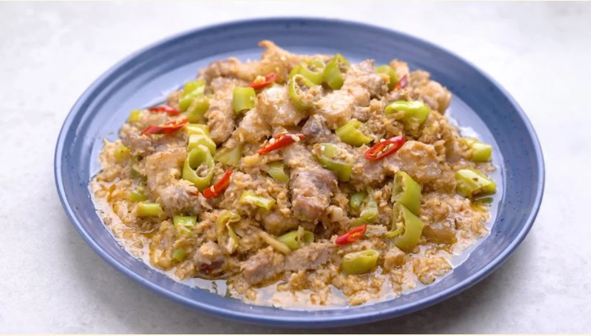

Bicol Express

Bicol Express
is a spicy, savory Filipino stew from the Bicol region, made with pork, chilies, and coconut milk, inspired by a local dish called gulay na may lada. It's a popular dish known for its combination of creamy coconut milk and fiery chilies.
Main Ingredients
- Pork belly slices
- Long green chilies
- Coconut milk
- Shrimp paste
How to make it
- Sauté garlic, ginger, and onions in oil.
- Add the pork belly slices and cook until they are lightly browned.
- Stir in the shrimp paste.
- Pour in the coconut milk and bring to a simmer, then cook until the pork is tender.
- Add the long green chilies (siling haba) and cook for another 10 minutes.
- Serve hot, often with steamed rice.
Home